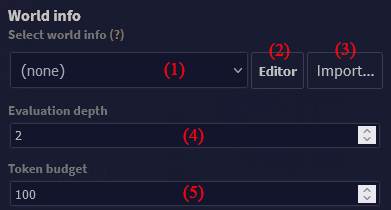
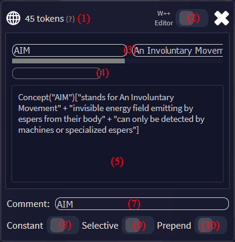

World Info
World Info enhances AI's understanding of the details in your world.It functions like a dynamic dictionary that only inserts relevant information from World Info entries when keywords associated with the entries are present in the message text.
The TavernAI engine activates and seamlessly integrates the appropriate lore into the prompt, providing background information to the AI.
It is important to note that while World Info helps guide the AI towards your desired lore, it does not guarantee its appearance in the generated output messages.
- World selector - changes which world is active, and which will be edited
- Editor button - edits currently selected world
- Import button - import world from JSON
- Token budget - sets how many tokens at maximum will be used for World Info entries. Actually used budget is automatically subtracted from context size of request - the more budget, the less conversation history.
- Evaluation depth - sets how many messages into the past World Info should look when searching for matching keys
Editor's main window

The editor allows you to add, delete, and change World Info entries. Worlds are saved in
Entries with no keys (and not being constant), or entries with W++ content but no properties, are highlited in red.
- World name and selector
- Delete world button
- Order up/down buttons - change the priority of entries. Entries on the top are evaluated first. You can also drag-and-drop entries.
- Entry's name - clicking this will open entry editor. The name is either the comment field of the entry, or its primary key will use comment, if given.
- Token count - how many tokens this entry will take up if it's matched
- Delete entry button
- Add new entry button
Entry editor
Each entry has primary keys and secondary keys (see below). These are chunks of text which, when matched, result in the entry's properties being inserted into the request.
Entry's properties come in plain text or simplified W++ (which is more economical). W++ has an editor which shows three main components: category, name, and properties.
- Token count - number of tokens of the content
- W++ editor switch - W++ format is more economic, but might not work for APIs other than KoboldAI
- Primary keys - these are keywords matched in the first pass through the messages in evaluation depth scope
- Secondary keys - these are keywords matched on the second pass through the messages. This means they automatically have lower priority than primary keys.
- Content as plain text - content is the only part of entry that gets injected if conditions are met. Plain text and W++ are synchronized automatically and can even be mixed.
- Content as W++ - only simplified W++ format is used, described below. W++ is further optimized to take up as few tokens as possible.
- Category - general term like "Place", "Character", "Item", etc. Autofill values are suggestions, not the only options.
- Name - official name of the given entry, such as "New York", "John Thompson", "Luger 9mm", etc.
- Properties - context for the entry, such as "bustling metropolis" "situated on East Coast of the USA" "expensive housing" "large rats", etc.
- Comment field - optional field for labeling items. If entered, is shown in editor menu by priority.
- Constant switch - when on, the entry will always be used, no matter the key matches (provided the budget allows for it). This effectively works as a global record in Scroll of Memories.
- Selective switch - when on, the entry can only be used if both primary and secondary keys have a match. (For instance, to distinguish between "Chris Evans" (primary) "actor" (secondary) and "Chris Evans" (primary) "presenter" (secondary).
- Prepend switch - when on, the content will be put in front of character definitions instead of behind them.
How World Info is evaluated
World Info entries have an order of priority in which they are evaluated. This is done message by message, from the highest priority (further up the list) to the lowest. You can change the order with the side buttons, or by dragging and dropping items.
On the first pass through all applicable message, main keys (first row in details) are evaluated. Then, if the token budget allows, a second pass is made, during which secondary keys are matched.
World info is case-insensitive. It doesn't matter if keys or text are or are not capitalized for them to match.
World info is recursive. This means that when matching of primary and secondary keys against all messages is finished, another round of matching happens against the resulting context, if any. This round obviously doesn't include entries already matched. This continues until there is token budget to use, context generated by entry matches, and unused matches left.
Example
| Example dialogue | ||
|---|---|---|
| Message number | Author | Content |
| 1 | Felix the Cat | The Moon sounds like a nice place to live. |
| 2 | You | Really? What about the lack of oxygen and copious amount of dust? |
| Example World Info | |||||
|---|---|---|---|---|---|
| Comment | Keys | Secondary keys | Content | Constant? | Selective? |
| Place | place, places, location | Concept("place")["contiguous portion of spacetime"] | false | false | |
| Human | human | Species("human")["bipedal life forms"+"have two hands"+"no tail"+"considered intelligent by themselves"] | false | false | |
| The Moon | moon | Place("Moon")["space body"+"lifeless"+"orbits earth"+"not out of cheese"] | false | false | |
| Lunar dust | dust | moon, lunar | Object("moon dust")["fine dust made from lunar regolith"+"sticks to things with static electricity"+"hazardous to health"] | false | true |
| Lunar regolith | regolith | Matter("regolith")["loose matter"+"found on surface of the Moon"+"includes rocks and lunar dust"+"not suitable for plant growth"] | false | false | |
| Cat | cat | Animal("cat")["fluffy"+"eats mice"+"possibly psychopathic"+"purr"+"humans love them"] | true | false | |
| Oxygen | oxygen | Element("oxygen")["gas"+"allows things to burn"+"humans usually need it for breathing"] | true | false | |
| Universe | Place("universe")["all of space and time and their contents"+"includes planets, stars, galaxies, matter, energy"] | true | false | ||
| Evaluation process Assuming no token limit. If there is one, as entries are added, their token size is added to a total. If the next added entry would get over that limit, the evaluation is ended. | |||||
|---|---|---|---|---|---|
| Source | Matched key | Entry injected | Note | ||
| [message 2] | dust | (none) | Because it's selective, the entry is not injected yet. | ||
| [message 2] | oxygen | Element("oxygen")["gas"+"allows things to burn"+"humans usually need it for breathing"] | Note that while the entry is constant, it was added prematurely because it matched one of its primary keys | ||
| Finished matching second sentence. Note that sentences are matched from newest to oldest. | |||||
| [message 1] | place | Concept("place")["contiguous portion of spacetime"] | Matched before "Moon" because it has higher priority. | ||
| [message 1] | Moon | Place("Moon")["space body"+"lifeless"+"orbits earth"+"not out of cheese"+"covered with regolith"] | |||
| [message 1] | moon | Object("lunar dust")["fine dust made from lunar regolith"+"sticks to things with static electricity"+"hazardous to health"] | Injected, because the secondary key was matched. Note that this is after first pass through all messages. | ||
| Finished checking all sentences. Adding constant entries. | |||||
| (message evaluation finished) | Universe | Place("universe")["all of space and time and their contents"+"includes planets, stars, galaxies, matter, energy"] | Constant; should always be included. Note that this was added this way before being matched from previously matched entry "universe", which includes its keyword "space" | ||
| Finished adding all constant entries. | |||||
| ["Oxygen" entry] | human | Species("human")["bipedal life forms"+"have two hands"+"no tail"+"considered intelligent by themselves"] | Note that "human" was matched from the plural, as it's a subset of "humans" | ||
| ["Lunar dust" entry] | regolith | Matter("regolith")["loose matter"+"found on surface of the Moon"+"includes rocks and lunar dust"+"not suitable for plant growth"] | Injected before lunar dust despite the priority, because primary key was matched. | ||
| End of matching. Note that sadly, "cat" was not matched at any point. This is despite it being in the name of a character (names are not examined for keys), and part of "location" (one of keys for "place"; keys are not part examined – had it been part of the content, it would have been matched). This shows why it's important to choose the right combination of primary and secondary keys. |
|||||
Pro Tips
- The AI does not insert keywords into context, so each World Info entry should be a comprehensive, standalone description.
- To create a rich and detailed world lore, entries can be interlinked and reference one another.
- To conserve tokens, it is advisable to keep entry contents concise, with a general recommended limit of 50 tokens per entry.